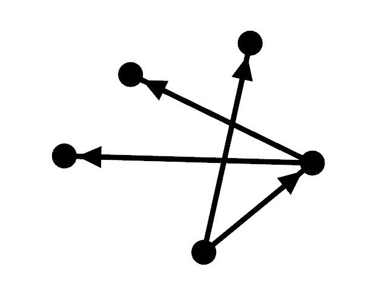

FSharpGephiStreamer
The library FSharpGephiStreamer provides functions suitable for use from F# scripting to stream graph data to gephi. Gephi is the leading visualization and exploration software for all kinds of graphs and networks. Gephi is open-source and free. In order to use FSharpGephiStreamer functionality it is necessary to install gephi with the plugin Graph Streaming installed and active in "Master mode".
1: 2: |
|
Quick use
The following example creates a simple graph nodes
1: 2: 3: 4: 5: 6: 7: 8: 9: 10: 11: 12: 13: 14: 15: 16: 17: 18: |
|

Update a node using NodeConverter<'node>:
1: 2: 3: 4: 5: 6: 7: 8: |
|

namespace FSharpGephiStreamer
val nodeList : int list
Full name: Index.nodeList
Full name: Index.nodeList
val edgeList : (int * (int * int)) list
Full name: Index.edgeList
Full name: Index.edgeList
Multiple items
module List
from Microsoft.FSharp.Collections
--------------------
type List<'T> =
| ( [] )
| ( :: ) of Head: 'T * Tail: 'T list
interface IEnumerable
interface IEnumerable<'T>
member GetSlice : startIndex:int option * endIndex:int option -> 'T list
member Head : 'T
member IsEmpty : bool
member Item : index:int -> 'T with get
member Length : int
member Tail : 'T list
static member Cons : head:'T * tail:'T list -> 'T list
static member Empty : 'T list
Full name: Microsoft.FSharp.Collections.List<_>
module List
from Microsoft.FSharp.Collections
--------------------
type List<'T> =
| ( [] )
| ( :: ) of Head: 'T * Tail: 'T list
interface IEnumerable
interface IEnumerable<'T>
member GetSlice : startIndex:int option * endIndex:int option -> 'T list
member Head : 'T
member IsEmpty : bool
member Item : index:int -> 'T with get
member Length : int
member Tail : 'T list
static member Cons : head:'T * tail:'T list -> 'T list
static member Empty : 'T list
Full name: Microsoft.FSharp.Collections.List<_>
val map : mapping:('T -> 'U) -> list:'T list -> 'U list
Full name: Microsoft.FSharp.Collections.List.map
Full name: Microsoft.FSharp.Collections.List.map
module Streamer
from FSharpGephiStreamer
from FSharpGephiStreamer
val addNodeBy : f:('node -> string) -> ('node -> Either<string,RestfulAux.Error>)
Full name: FSharpGephiStreamer.Streamer.addNodeBy
Full name: FSharpGephiStreamer.Streamer.addNodeBy
Multiple items
val string : value:'T -> string
Full name: Microsoft.FSharp.Core.Operators.string
--------------------
type string = System.String
Full name: Microsoft.FSharp.Core.string
val string : value:'T -> string
Full name: Microsoft.FSharp.Core.Operators.string
--------------------
type string = System.String
Full name: Microsoft.FSharp.Core.string
val addEdgeBy : f:('edge -> string * string * string) -> ('edge -> Either<string,RestfulAux.Error>)
Full name: FSharpGephiStreamer.Streamer.addEdgeBy
Full name: FSharpGephiStreamer.Streamer.addEdgeBy
val edgeId : int
val sourceId : int
val targetId : int
val nodeConverter : nodeId:int -> Grammar.Attribute list
Full name: Index.nodeConverter
Full name: Index.nodeConverter
val nodeId : int
module Grammar
from FSharpGephiStreamer
from FSharpGephiStreamer
type Attribute =
| Size of float
| Color of Color
| EdgeType of EdgeDirection
| PositionX of float
| PositionY of float
| PositionZ of float
| Label of string
| UserDef of string * obj
Full name: FSharpGephiStreamer.Grammar.Attribute
| Size of float
| Color of Color
| EdgeType of EdgeDirection
| PositionX of float
| PositionY of float
| PositionZ of float
| Label of string
| UserDef of string * obj
Full name: FSharpGephiStreamer.Grammar.Attribute
union case Grammar.Attribute.Label: string -> Grammar.Attribute
union case Grammar.Attribute.Color: Colors.Color -> Grammar.Attribute
module Colors
from FSharpGephiStreamer
from FSharpGephiStreamer
module Table
from FSharpGephiStreamer.Colors
from FSharpGephiStreamer.Colors
module Office
from FSharpGephiStreamer.Colors.Table
from FSharpGephiStreamer.Colors.Table
val blue : Colors.Color
Full name: FSharpGephiStreamer.Colors.Table.Office.blue
Full name: FSharpGephiStreamer.Colors.Table.Office.blue
val n : int
val updateNode : nodeConverter:Streamer.NodeConverter<'node> -> nodeId:obj -> ('node -> Either<string,RestfulAux.Error>)
Full name: FSharpGephiStreamer.Streamer.updateNode
Full name: FSharpGephiStreamer.Streamer.updateNode